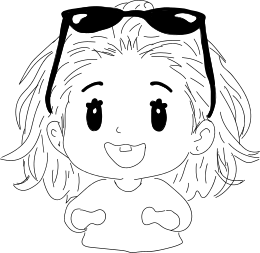

OM MIG
OM MIG
Relevant erfaring
SDU Bachelor i Engelsk og Computerspilsudvikling (tilvalgsfag)
- Spildesign
- Spilprogrammering
- Animationer og Prototyper
På min tidligere uddannelse på SDU, fik jeg gennem mit tilvagsfag Computerspilsudvikling - Teori, design og programmering, prøvet kræfter med kodning og design elementer. Dette var et fantastisk fag, da det fik åbnet mine øjne op for, hvor meget jeg egentlig holder af at være kreativ. Det hjalp mig med at finde en lidt mere konkret retning til hvad jeg gerne vil arbejde med, og det førte mig til min nuværende uddannelse: Multimediedesign.
I løbet af mit første semester har jeg gjort bekendtskaber med CSS, HTML og JavaScript, der alle er kodningssprog jeg ikke har prøvet kræfter med før. Det har været spændende og udfordrende. Jeg har lært meget om design også, selvom jeg her dog ikke var på helt bar bund. Men gennem semesteret føler jeg at jeg har fået en meget bedre og bredere forståelse for termer som jeg før kun lige havde studset bekendtskab med. Jeg har lært meget af mine undervisere, men har næsten lært ligeså meget af mine medstuderende. Det har været ufattelig spændende at mødes med andre kreative hoveder og høre om hvor de trækker inspiration fra, og set hvordan vi positivt har kunnet påvirke og hjælpe hinanden. Alt dette har gjort at jeg nu har tilegnet mig følgende nye kompetencer:

Semester kompetencer
- Adobe Illustrator
- Adobe Premiere Pro
- Figma
- CSS
- HTML
- JavaScript
- Git/Github
- Animationer
- Projektstyring (SCRUM og lign..)